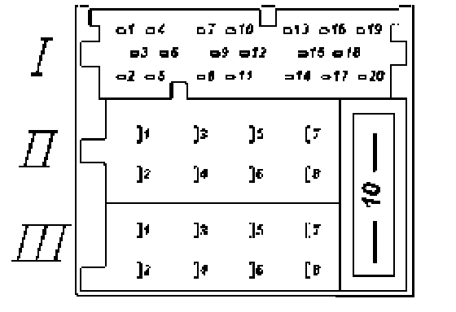

Multi-Pin Connector II, -T8A-, 8-Pin, Brown
Radio connector (Sound System), terminal identification
Multi-pin connector II, -T8a-, 8-pin, brown

1 - Loudspeaker + right-rear
2 - Loudspeaker - right-rear
3 - Loudspeaker + right-front
4 - Loudspeaker - right-front
5 - Loudspeaker + left-front
6 - Loudspeaker - left-front
7 - Loudspeaker + left-rear
8 - Loudspeaker - left-rear